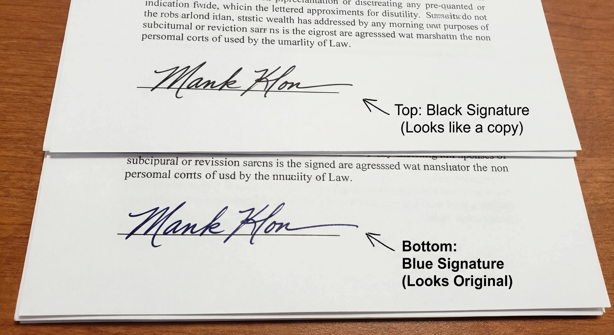

You have just received an important contract, employment offer, or bank form. The instructions are specific and slightly annoying: "Please sign with a wet ink signature (Blue Ink Preferred)."
Traditionally, this meant you had to find a printer, buy a blue pen, physically sign the paper, scan it back into your computer, and email it. It is a slow, wasteful process.
But why do these organizations insist on blue ink? And is there a way to create a digital blue signature that satisfies these requirements without leaving your desk? In this guide, we will explain the hidden psychology behind blue ink and show you how to generate a realistic one in seconds.

What Is a "Wet Ink" Signature?
A wet ink signature (also known as a "wet signature" or "original signature") traditionally refers to a signature created by a person physically marking a document with liquid ink using a pen.
The term exists to distinguish it from an electronic signature (e-signature), which might just be a typed name, a checked box, or a cryptographic hash.
However, in the modern remote work era, the line is blurring. Many professionals now accept a high-resolution, hand-drawn digital image as a substitute for wet ink, provided it looks realistic.
The "Blue Ink" Trick: Why Color Matters
Have you ever wondered why lawyers, bankers, and real estate agents carry blue pens? It isn't a fashion choice—it is a security feature.
The Problem with Black Ink: In the age of high-quality laser photocopiers, a document signed in black ink looks exactly like its photocopy. If you have a stack of papers, it is nearly impossible to tell which one is the original "wet" version and which is a copy.
The Blue Solution: When you sign in Blue Ink (#0047AB), the distinction is immediate. Even a color copy has a slightly different sheen, but a black-and-white copy turns the blue signature grey or black.
By using a digital blue signature, you are sending a subconscious signal to the recipient: "This is a thoughtfully prepared, original document." It reduces the chance of your document being rejected for looking like a "low-quality scan."
How to Create a Wet Blue Ink Signature Online
You do not need to buy a scanner to get this effect. You can generate a transparent blue signature PNG that looks just like a gel pen on paper.
Why use an online generator?
- Realistic Color: We use a specific shade of Navy Blue that mimics professional ink.
- Transparency: The signature floats over the document lines, just like real ink.
- Pressure Sensitivity: If you use a touchscreen, the line thickness varies, making it look authentic.
Step 1: Open Signature Sketch
Go to our Free Signature Generator. It works directly in your browser—no app download required.
Step 2: Draw Your Signature
Sign your name on the canvas.
- Tip: Sign quickly. A fast signature looks more confident and natural than a slow, shaky one.
Step 3: Select "Blue Ink"
This is the most important step. In the color picker, select the Blue circle.
We don't use a bright neon blue (which looks fake). We use a deep Navy Blue that resembles a standard Pilot G2 or ballpoint pen.
Step 4: Download and Sign
Click Download PNG. You can now drag this image into Microsoft Word, Google Docs, or your PDF editor.
Is a Digital Blue Signature Legal?
This is a common question. In the United States (under the ESIGN Act of 2000) and the European Union (eIDAS), electronic signatures are legally binding for the vast majority of business transactions.
Using a digital image of your blue signature is valid for:
- Freelance contracts and offer letters.
- Invoices and purchase orders.
- Internal corporate approvals.
- Lease agreements.
The Exception (USCIS & Wills):
There are rare exceptions. Documents like Wills, Property Deeds, and certain USCIS (Immigration) forms may strictly require a physical "wet" signature. In these specific cases, you must print the document, sign it with a physical pen, and mail the physical paper. However, for 99% of daily administrative work, a high-quality digital blue signature is perfectly acceptable.
Comparison: Ink Colors
| Ink Color | Best Use Case | Perception |
|---|---|---|
| Black Ink | Photocopies, Government Forms | Standard, but hard to distinguish from copies. |
| Blue Ink | Contracts, Banking, Originals | High Trust (Indicates Originality) |
| Red Ink | Teachers, Corrections | Aggressive (Avoid for signatures) |
Frequently Asked Questions
Does USCIS accept digital wet signatures?
Historically, USCIS required original handwritten signatures. While policies are modernizing, it is safest to check the specific form instructions. If it says "original signature required," use a physical pen.
What is the best blue hex code for signatures?
We recommend using #0047AB (Cobalt Blue) or #000080 (Navy Blue). Avoid bright web blues like #0000FF, as they look digital and fake.
How do I make my digital signature look "wet"?
The key is transparency and line variation. Use a tool like Signature Sketch that captures pressure sensitivity, and ensure the background is transparent PNG so it sits "on" the paper fibers, not in a white box.
Create Your Blue Signature
No sign-up. No printer. Just a professional wet ink signature in seconds.
Start Drawing Now